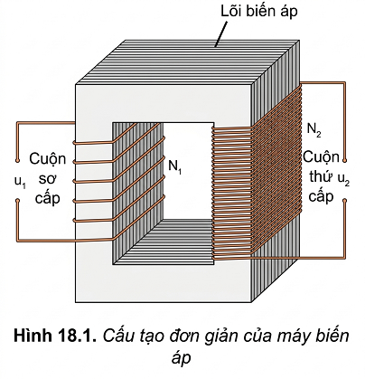
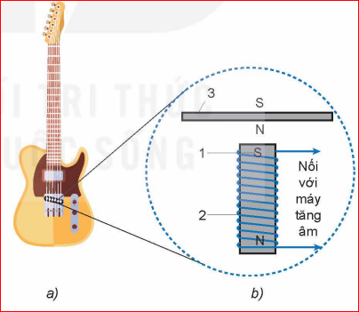

CHƯƠNG III: TỪ TRƯỜNG
BÀI 18: ỨNG DỤNG HIỆN TƯỢNG CẢM ỨNG ĐIỆN TỪ
"Sạc điện không dây ngày càng được sử dụng rộng rãi để sạc điện thoại, đồng hồ thông minh, máy hút bụi.... Sạc điện hoạt động dựa trên hiện tượng nào để truyền điện từ nguồn điện đến điện thoại?"
I. Máy biến áp
1. Cấu tạo
Máy biến áp gồm hai cuộn dây có số vòng khác nhau quấn trên một lõi kín (lõi biến áp).
- Lõi biến áp: Thường làm bằng các lá sắt hoặc thép pha silicon, ghép cách điện với nhau để giảm hao phí do dòng điện Foucault.
- Cuộn dây: Làm bằng đồng có phủ lớp cách điện.
- Cuộn sơ cấp (\(N_1\)): Nối với nguồn điện xoay chiều.
- Cuộn thứ cấp (\(N_2\)): Nối với tải tiêu thụ.

2. Nguyên lý làm việc
Hoạt động dựa trên hiện tượng cảm ứng điện từ. Dòng điện xoay chiều ở cuộn sơ cấp gây ra từ thông biến thiên qua cuộn thứ cấp, làm xuất hiện suất điện động cảm ứng xoay chiều ở cuộn thứ cấp.
Thảo luận:
Nội dung 1: Dựa vào biểu thức suất điện động cảm ứng \(e_c = -N \frac{\Delta\Phi}{\Delta t}\), hãy chứng tỏ mối liên hệ: \(\frac{U_1}{U_2} = \frac{N_1}{N_2}\).
Nội dung 2: Giải thích nguyên nhân xuất hiện điện áp \(u_2\) ở hai đầu cuộn thứ cấp.
Hướng dẫn:
1. Vì từ thông qua mỗi vòng dây là như nhau: \(e_1 = -N_1 \frac{\Delta\Phi}{\Delta t}\) và \(e_2 = -N_2 \frac{\Delta\Phi}{\Delta t}\). Lập tỉ số ta có \(\frac{e_1}{e_2} = \frac{N_1}{N_2}\). Với máy biến áp lý tưởng, điện áp hiệu dụng xấp xỉ bằng suất điện động hiệu dụng: \(\frac{U_1}{U_2} = \frac{N_1}{N_2}\).
2. Do từ thông biến thiên xuyên qua cuộn thứ cấp tạo ra suất điện động cảm ứng theo định luật Faraday.
Em có biết: Sạc điện thoại không dây
Hoạt động tương tự máy biến áp. Đế sạc chứa cuộn sơ cấp nối điện xoay chiều. Mặt lưng điện thoại chứa cuộn thứ cấp nối với pin. Khi đặt cạnh nhau, từ trường biến thiên từ đế sạc cảm ứng sang cuộn dây trong điện thoại để sạc pin.

II. Đàn ghi ta điện
1. Cấu tạo
Đàn ghi ta điện không có hộp cộng hưởng. Âm thanh được tạo ra nhờ các cuộn dây cảm ứng (pick-up) đặt dưới dây đàn.
Mỗi pick-up gồm một nam châm vĩnh cửu nhỏ đặt bên trong một cuộn dây dẫn nối với máy tăng âm.

2. Nguyên lý làm việc
Khi gảy, dây đàn bằng thép dao động làm từ trường của nó biến thiên. Sự biến thiên này tạo ra từ thông biến thiên qua cuộn dây cảm ứng, sinh ra dòng điện cảm ứng có cùng tần số với âm thanh.
Thảo luận & Câu hỏi:
- Tại sao dây đàn ghi ta điện cần làm bằng thép?
- Vì sao không có hộp cộng hưởng mà ta vẫn nghe được âm thanh?
- Giải thích vì sao gảy mạnh thì âm to dựa vào \(e_c = -N \frac{\Delta\Phi}{\Delta t}\)?
- 1. Thép là vật liệu từ tính, dễ bị từ hóa bởi nam châm trong pick-up để tạo ra từ trường riêng.
- 2. Nhờ máy tăng âm (amplifier) và loa khuếch đại tín hiệu điện từ dòng cảm ứng.
- 3. Gảy mạnh làm biên độ dao động lớn -> tốc độ biến thiên từ thông \(\frac{\Delta\Phi}{\Delta t}\) lớn -> suất điện động cảm ứng lớn -> tín hiệu điện mạnh -> âm to.
III. Củng cố
Em đã học
Nguyên tắc máy biến áp, đàn ghi ta điện dựa trên hiện tượng cảm ứng điện từ và định luật Faraday.
Em có thể
Giải thích ứng dụng: phanh điện từ, bếp từ, sạc không dây bằng định luật Faraday và Lenz.
Em có biết
Dòng điện Foucault là dòng điện cảm ứng trong khối vật dẫn, có tính chất xoáy và gây tác dụng nhiệt.
Câu hỏi trắc nghiệm
Câu 1: Máy biến áp hoạt động dựa trên hiện tượng nào?
Câu 2: Để giảm hao phí do dòng điện Foucault trong máy biến áp, người ta dùng:
Câu 3: Một máy biến áp có \(N_1 = 1000\) vòng, \(N_2 = 2000\) vòng. Đây là máy:
Bài tập tự luận
BT 1: Tính số vòng dây cuộn thứ cấp của một máy hạ áp từ 220V xuống 12V, biết cuộn sơ cấp có 1100 vòng.
BT 2: Giải thích tại sao máy biến áp không hoạt động được với dòng điện một chiều không đổi?
BT 3: Tại sao trong các bếp từ, nồi nấu phải có đáy làm bằng vật liệu nhiễm từ (sắt, inox hít nam châm)?